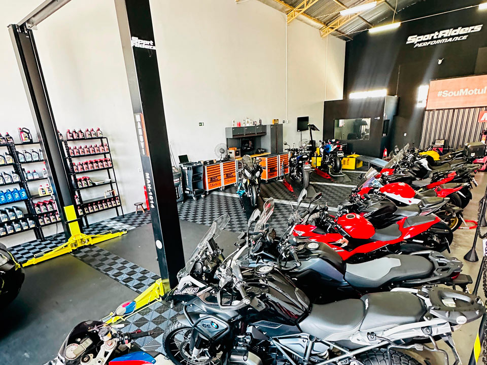

Alta performance até na manutenção! Nesta oficina automotiva de alto padrão, modelos de luxo como Ferrari, Lamborghini, Porsche e Mercedes dividem o espaço com clássicos exclusivos, todos recebendo atenção técnica especializada. Cada veículo é tratado com o máximo de cuidado e precisão, garantindo que voltem às ruas com desempenho impecável e visual de tirar o fôlego. Um verdadeiro paraíso para os amantes de carros!

Potência em boas mãos! Dentro da oficina Hype, o lendário Nissan Skyline GT-R R34 está recebendo o cuidado que só um verdadeiro clássico merece. Com o capô aberto, é possível ver o coração pulsante dessa máquina um motor RB26DETT que marcou gerações e se tornou símbolo do universo JDM (Japanese Domestic Market). Muito mais que uma simples manutenção, cada detalhe está sendo cuidadosamente verificado por profissionais apaixonados por alta performance, garantindo que o carro continue entregando o desempenho bruto e a confiabilidade que o tornaram famoso no mundo inteiro.
Mãos que transformam potência em precisão! Na Oficina Hype, o motor ganha vida nova pelas mãos habilidosas de um mecânico dedicado. A desmontagem e análise minuciosa dos componentes revelam o cuidado com cada detalhe, desde o cabeçote até os sistemas internos. Aqui, não se trata apenas de consertar trata-se de restaurar a alma do carro, garantindo que ele volte à estrada com força total.Mais do que um trabalho técnico, é uma arte que combina conhecimento, paciência e paixão por motores. Cada peça inspecionada e cada ajuste feito representam o compromisso com a qualidade e a segurança. Um verdadeiro retrato do que acontece nos bastidores da performance automotiva.
Precisão sobre duas e quatro rodas! A Oficina Hype é especializada tanto em motos esportivas quanto em carros potentes, oferecendo um espaço moderno, bem equipado e pronto para cuidar de cada detalhe mecânico e estético. Com boxes organizados, ferramentas profissionais e uma equipe técnica qualificada, o local se destaca pelo atendimento de excelência e pela paixão em transformar potência em confiança na pista e na estrada.
Na Oficina Hype, acreditamos que cuidar do seu carro é também cuidar da sua segurança e tranquilidade. Com anos de experiência no mercado automotivo, oferecemos serviços completos de manutenção preventiva e corretiva, sempre com o compromisso de qualidade, honestidade e agilidade. Nossa equipe é formada por profissionais altamente capacitados, prontos para identificar e resolver qualquer problema no seu veículo com precisão e atenção aos detalhes. Utilizamos equipamentos modernos e peças de procedência garantida, assegurando um serviço confiável do início ao fim. Aqui, cada cliente é tratado com respeito e transparência, porque sabemos que mais do que carros, lidamos com histórias, rotinas e confiança. Entre em contato, agende seu atendimento ou venha nos fazer uma visita. Estamos prontos para oferecer o melhor cuidado para o seu carro!
Acesse o topo de página